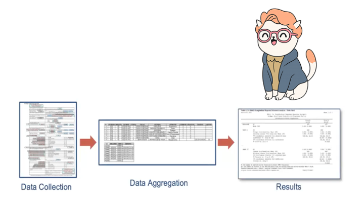
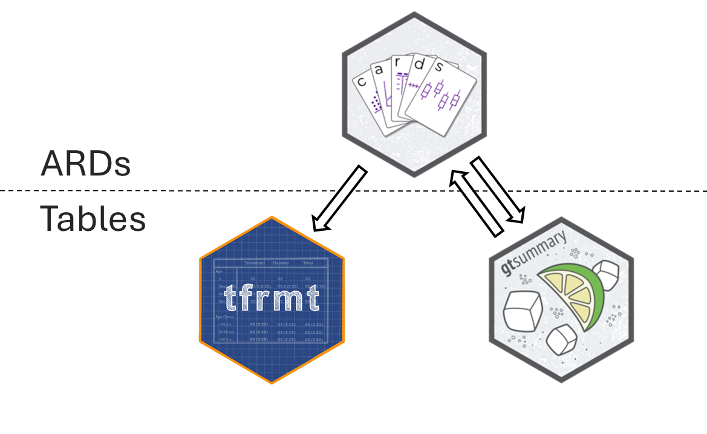
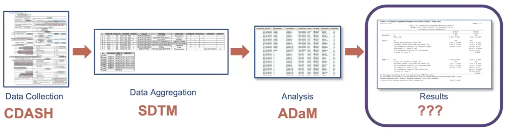
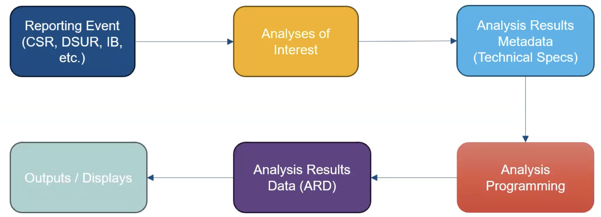

ARDs (Analysis Results Datasets) in R
Check in with Barb!
Barb is on a journey from raw to TFL. At various points we will be finding Barb in our data as we transform from Raw to TFL. Barb has arrived at RESULTS!
ARDS 🤝 Tables: A Dynamic Duo
Objectives
- By the end of this ARD section you will have:
- Developed an understanding of ARDs
- Seen examples of univariate and hierarachical calculations
- Gained an awareness of other possibilities in
cardsand statistical capabilities incardx
What are ARDs?
Dataset that stores key metadata and raw results from analysis
Long dataset that is 1 record per result value
May contained formatted values as well
The ARD can be used to to subsequently create tables and figures.
The ARD does not describe the layout of the results
Analysis Results Data (ARD)
- After the initial creation of an ARD, the results can later be re-used again and again for subsequent reporting needs.

A few notes about ARDs
ARDs give us the opportunity to rethink QC
QC can be focused on the raw value, as well as the formatted display
You don’t have to waste time trying to match formatting to match QC
But…QC will be more sensitive to floating point
ARDs can be flexibly saved to different file types
- For example: a dataset (rds, xpt, etc) or json file
Zooming Out: The Analysis Results Standard (ARS)
 :::{.small} :::{.incremental} Objectives include:
- To leverage analysis results metadata to drive the automation of results
- To support storage, access, processing, traceability and reproducibility of results
- Learn more at https://www.cdisc.org/events/webinar/analysis-results-standard-public-review ::: :::
Proposed Metadata Framework in the ARS
- The ARS provides a metadata-driven infrastructure for analysis
Proposed Metadata Framework in the ARS

The ARS provides a metadata-driven infrastructure for analysis
{cards} serves as the engine for the analysis
ARDs using {cards}

{cards}: Introduction
Part of the Pharmaverse
Collaboration between Roche, GSK, Novartis, Eli Lilly, Pfizer
Contains a variety of utilities for making ARDs
Can be used within the ARS workflow and separately
38k downloads per month 🤯
Data used in examples
ADSL from pharmaverseadam
ADAE from pharmaverseadam
{cards}: ard_tabulate()
- includes
n,%,Nby default - Any unobserved levels of the variables will be present in the resulting ARD.
{cards} data frame: 6 x 9 variable variable_level context stat_name stat_label stat
1 AGEGR1 >64 tabulate n n 221
2 AGEGR1 >64 tabulate N N 254
3 AGEGR1 >64 tabulate p % 0.87
4 AGEGR1 18-64 tabulate n n 33
5 AGEGR1 18-64 tabulate N N 254
6 AGEGR1 18-64 tabulate p % 0.13ℹ 3 more variables: fmt_fun, warning, error{cards}: ard_tabulate()
- includes
n,%,Nby default - Any unobserved levels of the variables will be present in the resulting ARD.
{cards} data frame: 12 x 11 group1 group1_level variable variable_level stat_name stat_label stat
1 ARM2 Placebo AGEGR1 >64 n n 72
2 ARM2 Placebo AGEGR1 >64 N N 86
3 ARM2 Placebo AGEGR1 >64 p % 0.837
4 ARM2 Placebo AGEGR1 18-64 n n 14
5 ARM2 Placebo AGEGR1 18-64 N N 86
6 ARM2 Placebo AGEGR1 18-64 p % 0.163
7 ARM2 Xanomeli… AGEGR1 >64 n n 149
8 ARM2 Xanomeli… AGEGR1 >64 N N 168
9 ARM2 Xanomeli… AGEGR1 >64 p % 0.887
10 ARM2 Xanomeli… AGEGR1 18-64 n n 19
11 ARM2 Xanomeli… AGEGR1 18-64 N N 168
12 ARM2 Xanomeli… AGEGR1 18-64 p % 0.113ℹ 4 more variables: context, fmt_fun, warning, error{cards}: ard_summary()
{cards} data frame: 8 x 8 variable context stat_name stat_label stat fmt_fun
1 AGE summary N N 254 0
2 AGE summary mean Mean 75.087 1
3 AGE summary sd SD 8.246 1
4 AGE summary median Median 77 1
5 AGE summary p25 Q1 70 1
6 AGE summary p75 Q3 81 1
7 AGE summary min Min 51 1
8 AGE summary max Max 89 1ℹ 2 more variables: warning, error{cards}: ard_summary() by variable
by: summary statistics are calculated by all combinations of the by variables, including unobserved factor levels
{cards} data frame: 16 x 10 group1 group1_level variable stat_name stat_label stat
1 ARM2 Placebo AGE N N 86
2 ARM2 Placebo AGE mean Mean 75.209
3 ARM2 Placebo AGE sd SD 8.59
4 ARM2 Placebo AGE median Median 76
5 ARM2 Placebo AGE p25 Q1 69
6 ARM2 Placebo AGE p75 Q3 82
7 ARM2 Placebo AGE min Min 52
8 ARM2 Placebo AGE max Max 89
9 ARM2 Xanomeli… AGE N N 168
10 ARM2 Xanomeli… AGE mean Mean 75.024
11 ARM2 Xanomeli… AGE sd SD 8.09
12 ARM2 Xanomeli… AGE median Median 77
13 ARM2 Xanomeli… AGE p25 Q1 71
14 ARM2 Xanomeli… AGE p75 Q3 81
15 ARM2 Xanomeli… AGE min Min 51
16 ARM2 Xanomeli… AGE max Max 88ℹ 4 more variables: context, fmt_fun, warning, error{cards}: ard_summary() statistics
statistic: specify univariate summary statistics. Accepts any function, base R, from a package, or user-defined.
{cards} data frame: 2 x 10 group1 group1_level variable stat_name stat_label stat
1 ARM2 Placebo AGE cv cv 0.114
2 ARM2 Xanomeli… AGE cv cv 0.108ℹ 4 more variables: context, fmt_fun, warning, error{cards}: ard_summary() statistics
Customize the statistics returned for each variable
{cards} data frame: 6 x 10 group1 group1_level variable stat_name stat_label stat
1 ARM2 Placebo AGE cv cv 0.114
2 ARM2 Placebo AGE2 mean Mean 75.209
3 ARM2 Placebo AGE2 median Median 76
4 ARM2 Xanomeli… AGE cv cv 0.108
5 ARM2 Xanomeli… AGE2 mean Mean 75.024
6 ARM2 Xanomeli… AGE2 median Median 77ℹ 4 more variables: context, fmt_fun, warning, error{cards}: ard_summary() fmt_fun
- Override the default formatting functions
- Can also update later via
update_ard_fmt_fun()
{cards} data frame: 16 x 11 group1 group1_level variable stat_name stat_label stat stat_fmt
1 ARM2 Placebo AGE N N 86 86
2 ARM2 Placebo AGE mean Mean 75.209 75
3 ARM2 Placebo AGE sd SD 8.59 8.6
4 ARM2 Placebo AGE median Median 76 76.0
5 ARM2 Placebo AGE p25 Q1 69 69.0
6 ARM2 Placebo AGE p75 Q3 82 82.0
7 ARM2 Placebo AGE min Min 52 52.0
8 ARM2 Placebo AGE max Max 89 89.0
9 ARM2 Xanomeli… AGE N N 168 168
10 ARM2 Xanomeli… AGE mean Mean 75.024 75
11 ARM2 Xanomeli… AGE sd SD 8.09 8.1
12 ARM2 Xanomeli… AGE median Median 77 77.0
13 ARM2 Xanomeli… AGE p25 Q1 71 71.0
14 ARM2 Xanomeli… AGE p75 Q3 81 81.0
15 ARM2 Xanomeli… AGE min Min 51 51.0
16 ARM2 Xanomeli… AGE max Max 88 88.0ℹ 4 more variables: context, fmt_fun, warning, error{cards}: Other Summary Functions
ard_tabulate_value(): similar toard_tabulate(), but for dichotomous tabulationsard_hierarchical(): similar toard_tabulate(), but built for nested tabulations, e.g. AE terms within SOCard_mvsummary(): similar toard_summary(), for multivariate summaries. The function accepts other arguments like the full and subsetted (within the by groups) data sets.ard_missing(): tabulates rates of missingness
The results from all these functions are entirely compatible with one another, and can be stacked into a single data frame. 🥞
{cards}: Other Functions
In addition to exporting functions to prepare summaries, {cards} exports many utilities for wrangling ARDs and creating new ARDs.
Constructing: bind_ard(), tidy_as_ard(), nest_for_ard(), check_ard_structure(), and many more
Wrangling: get_ard_statistics(), replace_null_statistic(), etc.
{cards}: Stacking utilities
dataand.byare shared by allard_*callsAdditional Options
.overall,.missing,.attributes, and.total_nprovide even more resultsBy default, summaries of the
.byvariable are included
{cards} data frame: 14 x 11 group1 group1_level variable variable_level stat_name stat_label stat
1 ARM2 Placebo AGE mean Mean 75.209
2 ARM2 Placebo AGE sd SD 8.59
3 ARM2 Placebo AGEGR1 >64 p % 0.837
4 ARM2 Placebo AGEGR1 18-64 p % 0.163
5 ARM2 Xanomeli… AGE mean Mean 75.024
6 ARM2 Xanomeli… AGE sd SD 8.09
7 ARM2 Xanomeli… AGEGR1 >64 p % 0.887
8 ARM2 Xanomeli… AGEGR1 18-64 p % 0.113
9 <NA> ARM2 Placebo n n 86
10 <NA> ARM2 Placebo N N 254
11 <NA> ARM2 Placebo p % 0.339
12 <NA> ARM2 Xanomeli… n n 168
13 <NA> ARM2 Xanomeli… N N 254
14 <NA> ARM2 Xanomeli… p % 0.661ℹ 4 more variables: context, fmt_fun, warning, errorQuick recap!
- Let’s compute summaries for a demography table that includes age (AGE), age group (AGEGR1), and sex (SEX) by treatment (ARM2)
- First, we compute the continuous summaries for AGE by ARM2
Quick recap!
- Let’s compute summaries for a demography table that includes age (AGE), age group (AGEGR1), and sex (SEX) by treatment (ARM2)
- First, we compute the continuous summaries for AGE by ARM2
{cards} data frame: 16 x 10 group1 group1_level variable stat_name stat_label stat
1 ARM2 Placebo AGE N N 86
2 ARM2 Placebo AGE mean Mean 75.209
3 ARM2 Placebo AGE sd SD 8.59
4 ARM2 Placebo AGE median Median 76
5 ARM2 Placebo AGE p25 Q1 69
6 ARM2 Placebo AGE p75 Q3 82
7 ARM2 Placebo AGE min Min 52
8 ARM2 Placebo AGE max Max 89
9 ARM2 Xanomeli… AGE N N 168
10 ARM2 Xanomeli… AGE mean Mean 75.024
11 ARM2 Xanomeli… AGE sd SD 8.09
12 ARM2 Xanomeli… AGE median Median 77
13 ARM2 Xanomeli… AGE p25 Q1 71
14 ARM2 Xanomeli… AGE p75 Q3 81
15 ARM2 Xanomeli… AGE min Min 51
16 ARM2 Xanomeli… AGE max Max 88ℹ 4 more variables: context, fmt_fun, warning, errorQuick recap!
- Let’s compute summaries for a demography table that includes age (AGE), age group (AGEGR1), and sex (SEX) by treatment (ARM2)
- Next, we compute the categorical summaries for AGEGR1 and SEX by ARM2
Quick recap!
- Let’s compute summaries for a demography table that includes age (AGE), age group (AGEGR1), and sex (SEX) by treatment (ARM2)
- Next, we compute the categorical summaries for AGEGR1 and SEX by ARM2
{cards} data frame: 24 x 11 group1 group1_level variable variable_level stat_name stat_label stat
1 ARM2 Placebo AGEGR1 >64 n n 72
2 ARM2 Placebo AGEGR1 >64 N N 86
3 ARM2 Placebo AGEGR1 >64 p % 0.837
4 ARM2 Placebo AGEGR1 18-64 n n 14
5 ARM2 Placebo AGEGR1 18-64 N N 86
6 ARM2 Placebo AGEGR1 18-64 p % 0.163
7 ARM2 Placebo SEX F n n 53
8 ARM2 Placebo SEX F N N 86
9 ARM2 Placebo SEX F p % 0.616
10 ARM2 Placebo SEX M n n 33ℹ 14 more rowsℹ Use `print(n = ...)` to see more rowsℹ 4 more variables: context, fmt_fun, warning, errorQuick recap!
Let’s compute summaries for a demography table that includes age (AGE), age group (AGEGR1), and sex (SEX) by treatment (ARM2) in a single ard_stack() call, including:
summaries by ARM2 as performed above
continuous summaries from part A for AGE
categorical summaries from part B for AGEGR1 and SEX
Quick recap!
Let’s compute summaries for a demography table that includes age (AGE), age group (AGEGR1), and sex (SEX) by treatment (ARM2) in a *single ard_stack() call, including:
summaries by ARM2 as performed above
continuous summaries from part A for AGE
categorical summaries from part B for AGEGR1 and SEX
{cards} data frame: 46 x 11 group1 group1_level variable variable_level stat_name stat_label stat
1 ARM2 Placebo AGE N N 86
2 ARM2 Placebo AGE mean Mean 75.209
3 ARM2 Placebo AGE sd SD 8.59
4 ARM2 Placebo AGE median Median 76
5 ARM2 Placebo AGE p25 Q1 69
6 ARM2 Placebo AGE p75 Q3 82
7 ARM2 Placebo AGE min Min 52
8 ARM2 Placebo AGE max Max 89
9 ARM2 Placebo AGEGR1 >64 n n 72
10 ARM2 Placebo AGEGR1 >64 N N 86ℹ 36 more rowsℹ Use `print(n = ...)` to see more rowsℹ 4 more variables: context, fmt_fun, warning, errorQuick recap!
We can also add:
- Overall summaries for all variables
- Total N
{cards} data frame: 67 x 11 group1 group1_level variable variable_level stat_name stat_label stat
1 ARM2 Placebo AGE N N 86
2 ARM2 Placebo AGE mean Mean 75.209
3 ARM2 Placebo AGE sd SD 8.59
4 ARM2 Placebo AGE median Median 76
5 ARM2 Placebo AGE p25 Q1 69
6 ARM2 Placebo AGE p75 Q3 82
7 ARM2 Placebo AGE min Min 52
8 ARM2 Placebo AGE max Max 89
9 ARM2 Placebo AGEGR1 >64 n n 72
10 ARM2 Placebo AGEGR1 >64 N N 86ℹ 57 more rowsℹ Use `print(n = ...)` to see more rowsℹ 4 more variables: context, fmt_fun, warning, error{cards}: Hierarchical Summary Functions
Following hierarchical summary functions aid in nested tabulations (e.g. AE terms within SOC):
ard_hierarchical(): calculating nested subject-level ratesard_hierarchical_count(): calculating nested event-level counts
{cards}: ard_hierarchical
This function specializes in calculating subject-level rates.
Rates computed on lowest level
variables, nested within othersidhelps to check that no duplicate rows exist within thec(id, variables)columnsdenominatordictates the denominator for the rates
{cards} data frame: 81 x 13 group1 group1_level group2 group2_level variable variable_level stat_name stat_label stat
1 TRT01A Placebo AESOC GASTROIN… AEDECOD DIARRHOEA n n 9
2 TRT01A Placebo AESOC GASTROIN… AEDECOD DIARRHOEA N N 86
3 TRT01A Placebo AESOC GASTROIN… AEDECOD DIARRHOEA p % 0.105
4 TRT01A Placebo AESOC GASTROIN… AEDECOD HIATUS H… n n 1
5 TRT01A Placebo AESOC GASTROIN… AEDECOD HIATUS H… N N 86
6 TRT01A Placebo AESOC GASTROIN… AEDECOD HIATUS H… p % 0.012
7 TRT01A Placebo AESOC GASTROIN… AEDECOD VOMITING n n 3
8 TRT01A Placebo AESOC GASTROIN… AEDECOD VOMITING N N 86
9 TRT01A Placebo AESOC GASTROIN… AEDECOD VOMITING p % 0.035
10 TRT01A Placebo AESOC GENERAL … AEDECOD APPLICAT… n n 3ℹ 71 more rowsℹ Use `print(n = ...)` to see more rowsℹ 4 more variables: context, fmt_fun, warning, error{cards}: ard_hierarchical_count
This function specializes in calculating event-level frequencies.
{cards} data frame: 27 x 13 group1 group1_level group2 group2_level variable variable_level stat_name stat_label stat
1 TRT01A Placebo AESOC GASTROIN… AEDECOD DIARRHOEA n n 10
2 TRT01A Placebo AESOC GASTROIN… AEDECOD HIATUS H… n n 2
3 TRT01A Placebo AESOC GASTROIN… AEDECOD VOMITING n n 3
4 TRT01A Placebo AESOC GENERAL … AEDECOD APPLICAT… n n 3
5 TRT01A Placebo AESOC GENERAL … AEDECOD APPLICAT… n n 10
6 TRT01A Placebo AESOC GENERAL … AEDECOD FATIGUE n n 2
7 TRT01A Placebo AESOC SKIN AND… AEDECOD ERYTHEMA n n 13
8 TRT01A Placebo AESOC SKIN AND… AEDECOD PRURITUS n n 11
9 TRT01A Placebo AESOC SKIN AND… AEDECOD PRURITUS… n n 0
10 TRT01A Xanomeli… AESOC GASTROIN… AEDECOD DIARRHOEA n n 3ℹ 17 more rowsℹ Use `print(n = ...)` to see more rowsℹ 4 more variables: context, fmt_fun, warning, errorHierarchical summaries many ways
Displays for hierarchical data typically report on each level of the hierarchy (Any AE Overall, by System Organ Class, by Preferred Term)
This can mean several calls to the
ard_hierarchical_*functionsFurther, subject-level summaries require a different subset of the data each time. For example, to calculate Overall rates, we need to subset to 1 record per subject in ADAE.
- Is there an easier way?
{cards}: Stacking function for ard_hierarchical()
ard_hierarchicalstacking functions simplify this multi-step process into a single stepThe
idargument is used to subset the data along the way
group1 group1_level group2 group2_level variable variable_level stat_name stat_label stat
1 TRT01A Placebo <NA> AESOC GASTROIN… n n 12
2 TRT01A Placebo <NA> AESOC GASTROIN… N N 86
3 TRT01A Placebo <NA> AESOC GASTROIN… p % 0.14
4 TRT01A Placebo AESOC GASTROIN… AEDECOD DIARRHOEA n n 9
5 TRT01A Placebo AESOC GASTROIN… AEDECOD DIARRHOEA N N 86
6 TRT01A Placebo AESOC GASTROIN… AEDECOD DIARRHOEA p % 0.105
7 TRT01A Placebo AESOC GASTROIN… AEDECOD HIATUS H… n n 1
8 TRT01A Placebo AESOC GASTROIN… AEDECOD HIATUS H… N N 86
9 TRT01A Placebo AESOC GASTROIN… AEDECOD HIATUS H… p % 0.012
10 TRT01A Placebo AESOC GASTROIN… AEDECOD VOMITING n n 3
11 TRT01A Placebo AESOC GASTROIN… AEDECOD VOMITING N N 86
12 TRT01A Placebo AESOC GASTROIN… AEDECOD VOMITING p % 0.035{cards}: Stacking function for ard_hierarchical_count()
- Below is the stacking function for event-level summaries, aligned with
ard_hierarchical_count()
group1 group1_level group2 group2_level variable variable_level stat_name stat_label stat
1 TRT01A Placebo <NA> AESOC GASTROIN… n n 15
2 TRT01A Placebo AESOC GASTROIN… AEDECOD DIARRHOEA n n 10
3 TRT01A Placebo AESOC GASTROIN… AEDECOD HIATUS H… n n 2
4 TRT01A Placebo AESOC GASTROIN… AEDECOD VOMITING n n 3Exercise 🏃➡️
Navigate to Posit Cloud script
exercises/04-ARD.RCompute the nested AE tabulations as described.
Add the “completed” sticky note to your laptop when complete.
10:00
{cardx}
Extension of the {cards} package, providing additional functions to create Analysis Results Datasets (ARDs)
The {cardx} package exports many
ard_*()function for statistical methods.

{cardx}
- Exports ARD frameworks for statistical analyses from many packages
- {stats}
- {car}
- {effectsize}
- {emmeans}
- {geepack}
- {lme4}
- {parameters}
- {smd}
- {survey}
- {survival}- This list is growing (rather quickly) 🌱
{cardx} t-test Example
We see the results like the mean difference, the confidence interval, and p-value as expected.
And we also see the function’s inputs, which is incredibly useful for re-use, e.g. we know that we did not use equal variances.
{cards} data frame: 14 x 9 group1 variable context stat_name stat_label stat
1 ARM2 AGE stats_t_… estimate Mean Dif… 0.185
2 ARM2 AGE stats_t_… estimate1 Group 1 … 75.209
3 ARM2 AGE stats_t_… estimate2 Group 2 … 75.024
4 ARM2 AGE stats_t_… statistic t Statis… 0.166
5 ARM2 AGE stats_t_… p.value p-value 0.868
6 ARM2 AGE stats_t_… parameter Degrees … 162.643
7 ARM2 AGE stats_t_… conf.low CI Lower… -2.02
8 ARM2 AGE stats_t_… conf.high CI Upper… 2.391
9 ARM2 AGE stats_t_… method method Welch Tw…
10 ARM2 AGE stats_t_… alternative alternat… two.sided
11 ARM2 AGE stats_t_… mu H0 Mean 0
12 ARM2 AGE stats_t_… paired Paired t… FALSE
13 ARM2 AGE stats_t_… var.equal Equal Va… FALSE
14 ARM2 AGE stats_t_… conf.level CI Confi… 0.95ℹ 3 more variables: fmt_fun, warning, error{cardx} t-test Example
What to do if a method you need is not implemented?
It’s simple to wrap existing frameworks to customize.
One-sample t-test example utilizing
cards::ard_summary().
{cards} data frame: 8 x 8 variable context stat_name stat_label stat fmt_fun
1 AGE t_test_o… estimate estimate 75.087 1
2 AGE t_test_o… statistic statistic 145.119 1
3 AGE t_test_o… p.value p.value 0 1
4 AGE t_test_o… parameter parameter 253 1
5 AGE t_test_o… conf.low conf.low 74.068 1
6 AGE t_test_o… conf.high conf.high 76.106 1
7 AGE t_test_o… method method One Samp… <fn>
8 AGE t_test_o… alternative alternat… two.sided <fn>ℹ 2 more variables: warning, error{cardx} t-test Example
- How to modify if we need a two-sample test, or more generally accessing other columns in the data frame.
{cards} data frame: 10 x 9 group1 variable context stat_name stat_label stat
1 ARM2 AGE t_test_t… estimate estimate 0.185
2 ARM2 AGE t_test_t… estimate1 estimate1 75.209
3 ARM2 AGE t_test_t… estimate2 estimate2 75.024
4 ARM2 AGE t_test_t… statistic statistic 0.166
5 ARM2 AGE t_test_t… p.value p.value 0.868
6 ARM2 AGE t_test_t… parameter parameter 162.643
7 ARM2 AGE t_test_t… conf.low conf.low -2.02
8 ARM2 AGE t_test_t… conf.high conf.high 2.391
9 ARM2 AGE t_test_t… method method Welch Tw…
10 ARM2 AGE t_test_t… alternative alternat… two.sidedℹ 3 more variables: fmt_fun, warning, error{cardx} Regression
- Includes functionality to summarize nearly every type of regression model in the R ecosystem:
betareg::betareg(), biglm::bigglm(), brms::brm(), cmprsk::crr(), fixest::feglm(), fixest::femlm(), fixest::feNmlm(), fixest::feols(), gam::gam(), geepack::geeglm(), glmmTMB::glmmTMB(), glmtoolbox::glmgee(), lavaan::lavaan(), lfe::felm(), lme4::glmer.nb(), lme4::glmer(), lme4::lmer(), logitr::logitr(), MASS::glm.nb(), MASS::polr(), mgcv::gam(), mice::mira, mmrm::mmrm(), multgee::nomLORgee(), multgee::ordLORgee(), nnet::multinom(), ordinal::clm(), ordinal::clmm(), parsnip::model_fit, plm::plm(), pscl::hurdle(), pscl::zeroinfl(), rstanarm::stan_glm(), stats::aov(), stats::glm(), stats::lm(), stats::nls(), survey::svycoxph(), survey::svyglm(), survey::svyolr(), survival::cch(), survival::clogit(), survival::coxph(), survival::survreg(), svyVGAM::svy_vglm(), tidycmprsk::crr(), VGAM::vgam(), VGAM::vglm() (and more)
{cardx} Regression
The cardx::ard_regression() does a lot for us in the background.
- Identifies the variable from the regression terms (i.e. groups levels of the same variable)
- Identifies reference groups from categorical covariates
- Finds variable labels from the source data frames
- Knows the total N of the model, the number of events, and can do the same for each level of categorical variables
- Contextually aware of slopes, odds ratios, hazard ratios, and incidence rate ratios
- And much much more.
variable variable_level context stat_name stat_label stat
1 ARM2 Placebo regressi… term term ARM2Plac…
2 ARM2 Placebo regressi… var_label Label ARM2
3 ARM2 Placebo regressi… var_class Class character
4 ARM2 Placebo regressi… var_type Type dichotom…
5 ARM2 Placebo regressi… var_nlevels N Levels 2
6 ARM2 Placebo regressi… contrasts contrasts contr.tr…
7 ARM2 Placebo regressi… contrasts_type Contrast… treatment
8 ARM2 Placebo regressi… reference_row referenc… TRUE
9 ARM2 Placebo regressi… label Level La… Placebo
10 ARM2 Placebo regressi… n_obs N Obs. 86When things go wrong 😱
What happens when statistics are un-calculable?
{cards} data frame: 2 x 10 group1 group1_level variable stat_name stat_label stat warning error
1 ARM2 Placebo AGEGR1 kurtosis kurtosis NA argument… non-nume…
2 ARM2 Xanomeli… AGEGR1 kurtosis kurtosis NA argument… non-nume…ℹ 2 more variables: context, fmt_fun